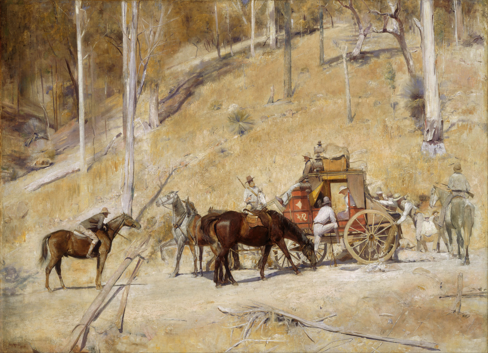

<head>
<meta charset="UTF-8" />
<meta name="keywords" content="drawing, painting" />
<meta name="description" content="drawings by Sunjy" />
<title>Sunjy</title>
<link rel="shortcut icon" type="image/x-icon" href="../../mImages/mCommon/favicon.ico" media="screen" />
<link rel="stylesheet" type="text/css" href="../../mCsses/mCommon/mCssA.css" />
<link rel="stylesheet" type="text/css" href="../../mCsses/mCommon/mCssB.css" />
<link rel="stylesheet" type="text/css" href="../../mCsses/mCommon/mCssC.css" />
<link rel="stylesheet" type="text/css" href="../../mCsses/mCommon/mCssD.css" />
<link rel="stylesheet" type="text/css" href="../../mCsses/mContent/mCssA.css" />
<link rel="stylesheet" type="text/css" href="../../mCsses/mContent/mCssB.css" />
<link rel="stylesheet" type="text/css" href="../../mCsses/mContent/mCssC.css" />
<link rel="stylesheet" type="text/css" href="../../mCsses/mContent/mCssD.css" />
</head>
<script type="text/javascript" src="../../mScripts/mContent/mContentAA.js" /></script>
<script type="text/javascript" src="../../mScripts/mContent/mContentAB.js" /></script>
<script type="text/javascript" src="../../mScripts/mContent/mContentAC.js" /></script>
<script type="text/javascript" src="../../mScripts/mContent/mContentAD.js" /></script>
<script type="text/javascript"></script> 
<script type="text/javascript">
document.write('<div class="mImgAbsolute"></div>');
/*
document.write('<p class="mFontSizeBColor" />From a white paper...</p>');
document.write('<table class="center"><tr><td>');
document.write('');
document.write('</td></tr></table>');
*/
</script>


<script type="text/javascript">
document.write('<p class="mFontSizeBColor" />Bailed Up</p>');
document.write('<p class="mFontSizeSColor" />“Bailed Up” by Tom Roberts depicts a distinctive Australian subject of a stagecoach being held up by bushrangers in a forested section of an isolated road. Tom Roberts painted this work in 1895 while staying at a sheep station near a small town called Inverell in northern New South Wales, Australia. It was at this sheep station that he also painted “The Golden Fleece,” a famous painting depicting sheep shearing.<br><br>The notorious bushranger Captain Thunderbolt had been active near this sheep station at Inverell, more than twenty-five years before this painting had been made. Still, it would have influenced Roberts and helped him conceived the idea of painting this subject.<br><br>This painting presents the story of Captain Thunderbolt (Frederick Ward) holding up the Inverell–Glen Innes mail-coach. Roberts is beautifully depicting a crackling dry landscape in the heat and light of a high summer’s day in the Australian bush. It took 33 years for this iconic painting to find a buyer, and in 1927, Roberts reworked this painting to simplify the work making it more abstract.<br></p>');
document.write('<table class="center" /><tr><td>');
document.write('<br>The notorious bushranger Captain Thunderbolt had been active near this sheep station at Inverell, more than twenty-five years before this painting had been made. Still, it would have influenced Roberts and helped him conceived the idea of painting this subject.<br><br>This painting presents the story of Captain Thunderbolt (Frederick Ward) holding up the Inverell–Glen Innes mail-coach. Roberts is beautifully depicting a crackling dry landscape in the heat and light of a high summer’s day in the Australian bush. It took 33 years for this iconic painting to find a buyer, and in 1927, Roberts reworked this painting to simplify the work making it more abstract.<br>" />');
document.write('</td></tr></table>');
</script>


